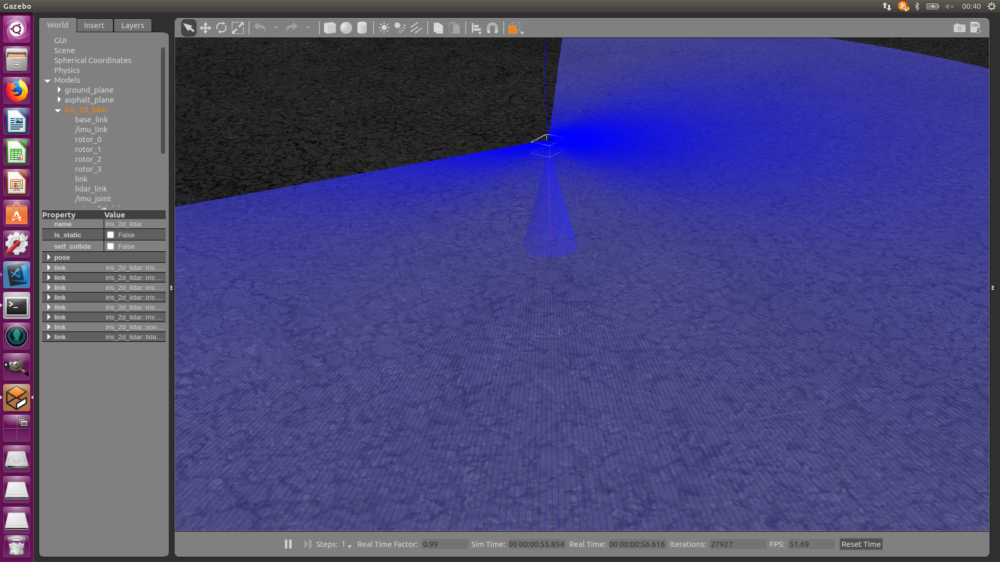

ドローンに距離センサを搭載する¶
距離センサをつける¶
はじめに¶
レーザー高度計（Lidar Lite など）とRayセンサ（Lidarなど）を同時に使用するとセグメンテーションフォールトでGazeboが起動できない（ #9156）ので今回は距離センサとして超音波センサを利用します。 GpuRayセンサであれば問題なく起動できるらしいので、どうしてもレーザー高度計を使用したい場合にはGpuRayセンサを利用すると良いでしょう。 ただし、GpuRayセンサはGPUを使用しない場合は正常に動作しないようなので、GPUがある場合に限って使用しましょう。
SDFファイル¶
iris_2d_lidarモデルをインクルードして超音波センサをつけても良いのですが、名前空間が煩雑（iris_2d_lidar::iris::base_linkとか）になり、TFの設定などが面倒なので、iris_2d_lidarモデルのSDFファイルをコピーして超音波センサを追加します。
超音波センサを追加したモデルは以下のようになります。
1 2 3 4 5 6 7 8 9 10 11 12 13 14 15 16 17 18 19 20 21 22 23 24 25 26 27 28 29 30 31 32 33 34 35 36 37 38 39 40 41 42 43 44 45 46 47 48 49 50 51 52 53 54 55 56 57 58 59 60 61 62 63 64 65 66 67 68 69 70 71 72 73 74 75 76 77 78 79 80 81 82 83 84 85 86 87 88 | <?xml version='1.0'?>
<sdf version='1.6'>
<model name='iris_sonar'>
<include>
<uri>model://iris</uri>
</include>
<!-- Sonar -->
<include>
<uri>model://sonar</uri>
<pose>0 0 -0.04 0 -1.57 0</pose>
</include>
<joint name="sonar_joint" type="fixed">
<child>sonar_model::link</child>
<parent>iris::base_link</parent>
</joint>
<link name="lidar_link">
<pose>0 0 0.05 0 -0.0085 0</pose>
<inertial>
<pose>0 0 0 0 -0 0</pose>
<mass>0.01</mass>
<inertia>
<ixx>2.1733e-6</ixx>
<ixy>0</ixy>
<ixz>0</ixz>
<iyy>2.1733e-6</iyy>
<iyz>0</iyz>
<izz>1.8e-7</izz>
</inertia>
</inertial>
<visual name="lidar_visual">
<geometry>
<cylinder>
<radius>0.01</radius>
<length>0.05</length>
</cylinder>
</geometry>
<material>
<script>
<name>Gazebo/DarkGrey</name>
<uri>file://media/materials/scripts/gazebo.material</uri>
</script>
</material>
</visual>
<sensor name="laser" type="ray">
<pose>0 0 0.02 0 0 0</pose>
<ray>
<scan>
<horizontal>
<samples>720</samples>
<resolution>1</resolution>
<min_angle>-2.0944</min_angle>
<max_angle>2.0944</max_angle>
</horizontal>
</scan>
<range>
<min>0.1</min>
<max>15</max>
<resolution>0.01</resolution>
</range>
<noise>
<type>gaussian</type>
<mean>0.0</mean>
<stddev>0.01</stddev>
</noise>
</ray>
<plugin name="LaserPlugin" filename="libgazebo_ros_laser.so">
<topicName>/laser/scan</topicName>
<frameName>/lidar_link</frameName>
</plugin>
<always_on>1</always_on>
<update_rate>40</update_rate>
<visualize>true</visualize>
</sensor>
</link>
<joint name="lidar_joint" type="fixed">
<child>lidar_link</child>
<parent>iris::base_link</parent>
</joint>
</model>
</sdf>
|
configファイル¶
以下のようなmodel.configも作成し、modelsディレクトリ以下にiris_sonarディレクトリを作ってその中に保存しましょう。 authorタグの中身は適宜変更してください。
1 2 3 4 5 6 7 8 9 10 11 12 13 14 15 | <?xml version="1.0"?>
<model>
<name>iris_sonar</name>
<version>1.0</version>
<sdf>model.sdf</sdf>
<author>
<name>Takaki Ueno</name>
<email>t_ueno@eis.hokudai.ac.jp</email>
</author>
<description>
Iris with 2d horizontal lidar and sonar rangefinder.
</description>
</model>
|
モデルを表示する¶
以下のようなLaunchファイルを作って、モデルがきちんと作成されているか確認してみましょう。
1 2 3 4 5 6 7 8 9 10 | <launch>
<node pkg="tf" name="base2sonar" type="static_transform_publisher" args="0 0 0 0 -1.57 0 base_link link 100"/>
<include file="$(find px4_sim_pkg)/launch/mymodel_sitl_tf.launch" >
<arg name="vehicle" value="iris_2d_lidar"/>
<arg name="sdf" value="$(find px4_sim_pkg)/models/iris_sonar/model.sdf" />
</include>
</launch>
|
Launchファイルを起動します。
roslaunch px4_sim_pkg mymodel_sonar.launch
地上にいる時はわかりませんが、離陸するときちんと超音波センサが取り付けられていることがわかります（青い円錐）。
距離センサの値をパブリッシュする¶
ドローンに搭載された距離センサの値をパブリッシュするには、 mavros_extras パッケージのdistance_sensorプラグインを使用します。
mavros_extrasパッケージには、他にも px4_flow からのデータをROSトピックにパブリッシュするプラグインなど、追加のセンサ用のプラグインが複数あります。
プラグインをブラックリストから外す¶
デフォルトではdistance_sensorプラグインはブラックリストに入っていて読み込まれないので、ブラックリストから外す必要があります。 プラグインのブラックリストおよびホワイトリストは、px4_pluginlists.yamlファイルに記述されています。 mavrosノードが起動するときに、このファイルの内容をROSパラメータとして読み込むことで、ブラックリストとホワイトリストが反映されます。
mavrosパッケージ以下にあるpx4_pluginlists.yamlを直接編集してもいいのですが、これを変更すると他のLaunchファイルなどに影響を与える可能性があるので、すでにあるファイルをコピーして編集します。 以下のコマンドでmavrosパッケージのディレクトリ内にあるpx4_pluginlists.yamlをコピーします。
roscp mavros px4_pluginlists.yaml ~catkin_ws/src/px4_sim_pkg/config/
以下のようにplugin_blacklist以下のdistance_sensorをコメントアウトします。
1 2 3 4 5 6 7 8 9 10 11 | plugin_blacklist:
# common
- safety_area
# extras
- image_pub
- vibration
# distance_sensor
- rangefinder
plugin_whitelist: []
# 'sys_*'
|
パラメータの設定¶
次に、distance_sensor用のROSパラメータを記述するファイルを作成します。
それぞれのパラメータの意味は以下のとおりです。
sonar_pub- センサ名。このセンサからのデータは、
/mavros/distance_sensor/sonar_pubにパブリッシュされます。 id- センサのID。QGCのMAVLink InspectorのDISTANCE SENSORの項目から確認できます。
frame_id- センサのベースフレーム名。
field_of_view- センサーの視野（Field of View; FOV）
send_tf- センサのTFを送るかどうか
sensor_position- センサの位置。
1 2 3 4 5 6 7 | distance_sensor:
sonar_pub:
id: 0
frame_id: "sonar_model::link"
field_of_view: 0
send_tf: false
sensor_position: {x: 0.0, y: 0.0, z: -0.04}
|
idは以下の動画のようにして確認できます。

Launchファイルを作る¶
以下のようなLaunchファイルを作成します。 TFをパブリッシュする設定などは省いているので、move_base等を使用する場合は適宜変更を加えてください。
1 2 3 4 5 6 7 8 9 10 11 12 13 14 15 16 17 18 19 20 21 22 23 24 25 26 27 28 29 30 31 32 33 34 35 36 37 38 39 40 41 42 43 44 | <launch>
<!-- Static TF Publisher -->
<node pkg="tf" name="base2sonar" type="static_transform_publisher" args="0 0 -0.04 0 -1.57 0 base_link sonar_model::link 100"/>
<node pkg="tf" name="base2lidar" type="static_transform_publisher" args="0 0 0.1 0 0 0 base_link lidar_link 100"/>
<!-- PX4 SITL -->
<arg name="vehicle" default="iris_2d_lidar"/>
<arg name="world" default="$(find mavlink_sitl_gazebo)/worlds/empty.world" />
<arg name="sdf" default="$(find px4_sim_pkg)/models/iris_sonar/model.sdf" />
<arg name="verbose" default="false"/>
<arg name="debug" default="false"/>
<include file="$(find px4)/launch/posix_sitl.launch" >
<arg name="sdf" value="$(arg sdf)" />
<arg name="vehicle" value="$(arg vehicle)" />
<arg name="verbose" value="$(arg verbose)" />
<arg name="debug" value="$(arg debug)" />
<arg name="world" value="$(arg world)" />
</include>
<!-- mavros -->
<arg name="fcu_url" default="udp://:14540@localhost:14557" />
<arg name="gcs_url" default="" />
<arg name="tgt_system" default="1" />
<arg name="tgt_component" default="1" />
<arg name="log_output" default="screen" />
<arg name="fcu_protocol" default="v2.0" />
<arg name="respawn_mavros" default="false" />
<include file="$(find mavros)/launch/node.launch">
<arg name="pluginlists_yaml" value="$(find dronedoc)/config/px4_pluginlists.yaml" />
<arg name="config_yaml" value="$(find dronedoc)/config/distance_sensor.yaml" />
<arg name="fcu_url" value="$(arg fcu_url)" />
<arg name="gcs_url" value="$(arg gcs_url)" />
<arg name="tgt_system" value="$(arg tgt_system)" />
<arg name="tgt_component" value="$(arg tgt_component)" />
<arg name="log_output" value="$(arg log_output)" />
<arg name="fcu_protocol" value="$(arg fcu_protocol)" />
<arg name="respawn_mavros" default="$(arg respawn_mavros)" />
</include>
</launch>
|
解説¶
<node pkg="tf" name="base2sonar" type="static_transform_publisher" args="0 0 -0.04 0 -1.57 0 base_link sonar_model::link 100"/>
<node pkg="tf" name="base2lidar" type="static_transform_publisher" args="0 0 0.1 0 0 0 base_link lidar_link 100"/>
ドローンのベースフレームからLiDARと距離センサへのTFをブロードキャストするためのノードを起動します。
<!-- PX4 SITL -->
<arg name="vehicle" default="iris_2d_lidar"/>
<arg name="world" default="$(find mavlink_sitl_gazebo)/worlds/empty.world" />
<arg name="sdf" default="$(find px4_sim_pkg)/models/iris_sonar/model.sdf" />
<arg name="verbose" default="false"/>
<arg name="debug" default="false"/>
<include file="$(find px4)/launch/posix_sitl.launch" >
<arg name="sdf" value="$(arg sdf)" />
<arg name="vehicle" value="$(arg vehicle)" />
<arg name="verbose" value="$(arg verbose)" />
<arg name="debug" value="$(arg debug)" />
<arg name="world" value="$(arg world)" />
</include>
PX4 SITLシミュレーションを起動します。 ソナー付きのIrisのモデルを指定しています。
また、今回はmavrosを別で起動するので、mavros_posix_sitl.launchではなく、posix_sitl.launchをインクルードします。
<!-- mavros -->
<arg name="fcu_url" default="udp://:14540@localhost:14557" />
<arg name="gcs_url" default="" />
<arg name="tgt_system" default="1" />
<arg name="tgt_component" default="1" />
<arg name="log_output" default="screen" />
<arg name="fcu_protocol" default="v2.0" />
<arg name="respawn_mavros" default="false" />
<include file="$(find mavros)/launch/node.launch">
<arg name="pluginlists_yaml" value="$(find dronedoc)/config/px4_pluginlists.yaml" />
<arg name="config_yaml" value="$(find dronedoc)/config/distance_sensor.yaml" />
<arg name="fcu_url" value="$(arg fcu_url)" />
<arg name="gcs_url" value="$(arg gcs_url)" />
<arg name="tgt_system" value="$(arg tgt_system)" />
<arg name="tgt_component" value="$(arg tgt_component)" />
<arg name="log_output" value="$(arg log_output)" />
<arg name="fcu_protocol" value="$(arg fcu_protocol)" />
<arg name="respawn_mavros" default="$(arg respawn_mavros)" />
</include>
mavrosを起動します。
mavrosパッケージのpx4.launchと内容はほとんど同じですが、fcu_url をシミュレーション用に、pluginlists_yaml と config_yaml を作成した設定ファイルに変えています。
実行する¶
作成したLaunchファイルを実行します。
roslaunch px4_sim_pkg mymodel_sonar.launch
距離センサのトピックの値を出力します。
rostopic echo /mavros/distance_sensor/sonar_pub
以下のような出力が得られれば設定が完了しています。
header:
seq: 145
stamp:
secs: 16
nsecs: 276000000
frame_id: "sonar_model::link"
radiation_type: 0
field_of_view: 0.0
min_range: 0.00999999977648
max_range: 5.0
range: 1.99000000954
---
header:
seq: 146
stamp:
secs: 16
nsecs: 380000000
frame_id: "sonar_model::link"
radiation_type: 0
field_of_view: 0.0
min_range: 0.00999999977648
max_range: 5.0
range: 1.95000004768
---
header:
seq: 147
stamp:
secs: 16
nsecs: 480000000
frame_id: "sonar_model::link"
radiation_type: 0
field_of_view: 0.0
min_range: 0.00999999977648
max_range: 5.0
range: 1.94000005722
---